🥢
Clássicos chineses
Pratos cheios de sabor para quem ama a culinária oriental.
Do sushi fresquinho aos clássicos da culinária chinesa e aos pratos brasileiros: descubra variedade e sabor em um só lugar.
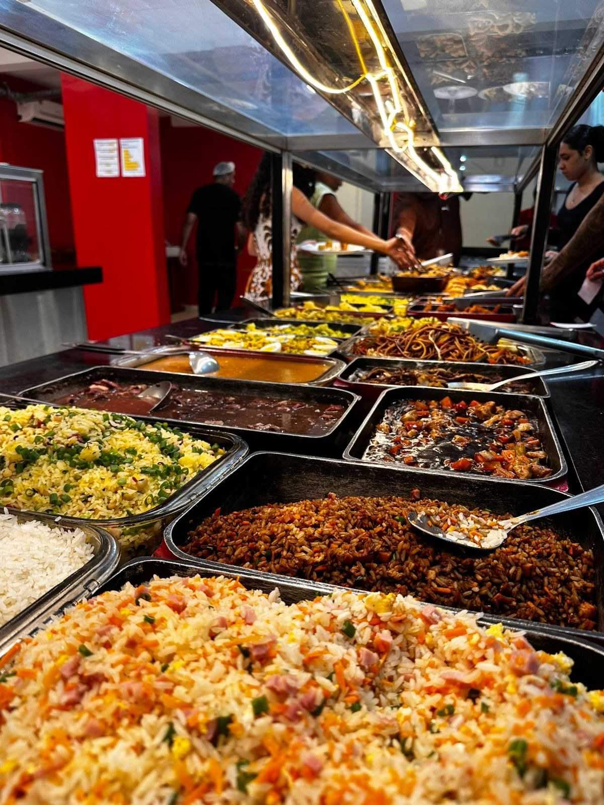
Reúna a família, venha com os amigos e aproveite uma seleção de sabores para diferentes paladares.
Pratos cheios de sabor para quem ama a culinária oriental.
Uma seleção de sushis para deixar sua refeição ainda mais especial.
Opções tradicionais e comida caseira para completar sua experiência.
Confira algumas fotos dos pratos e do ambiente do Xangai Restaurante.
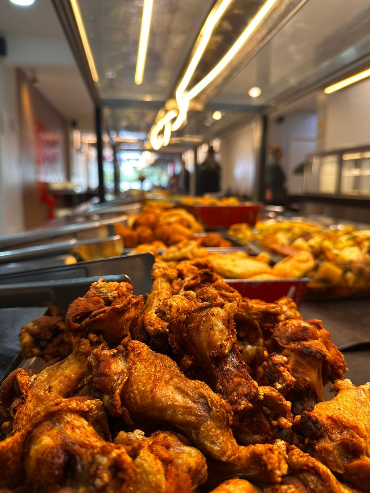
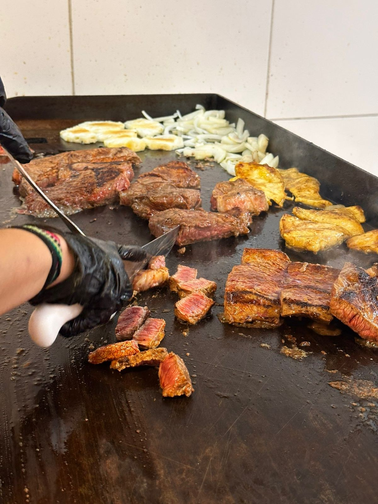
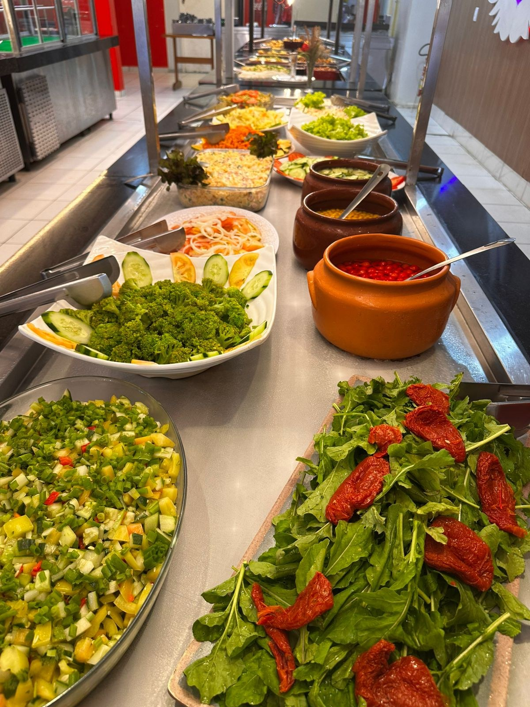
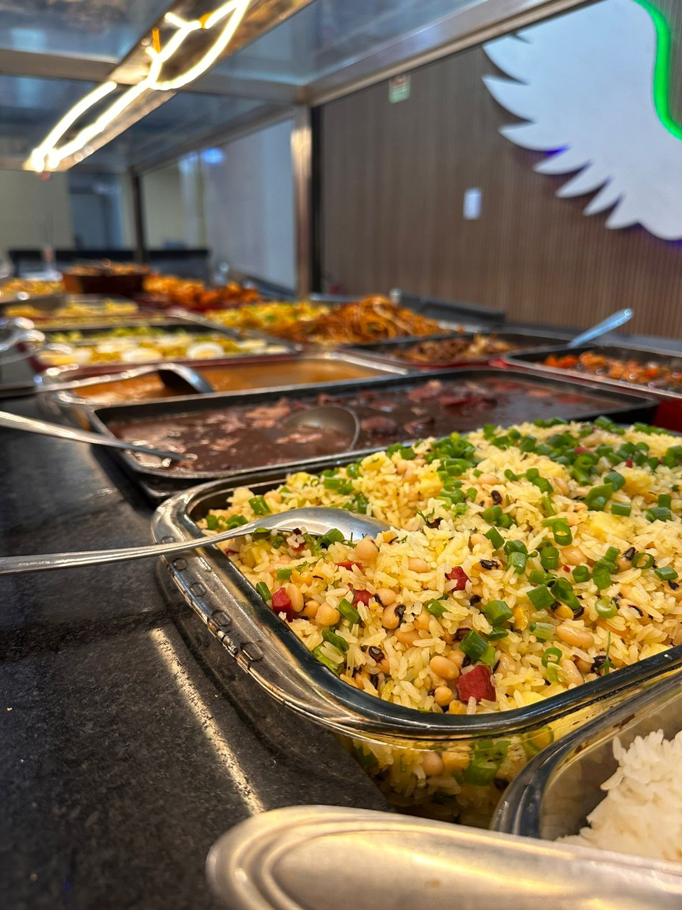
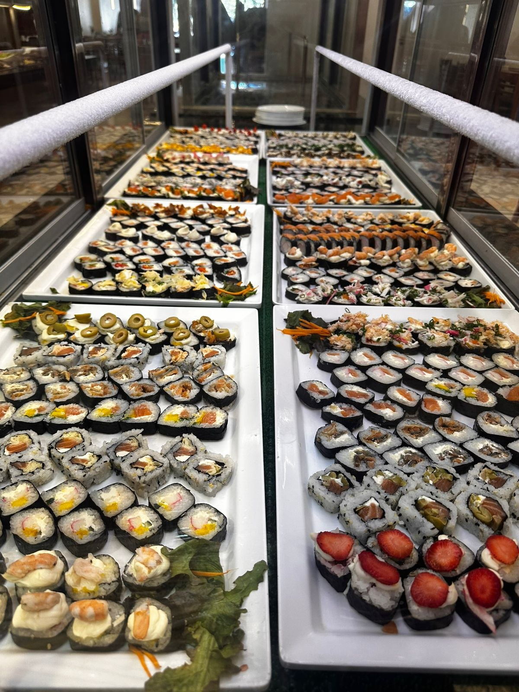
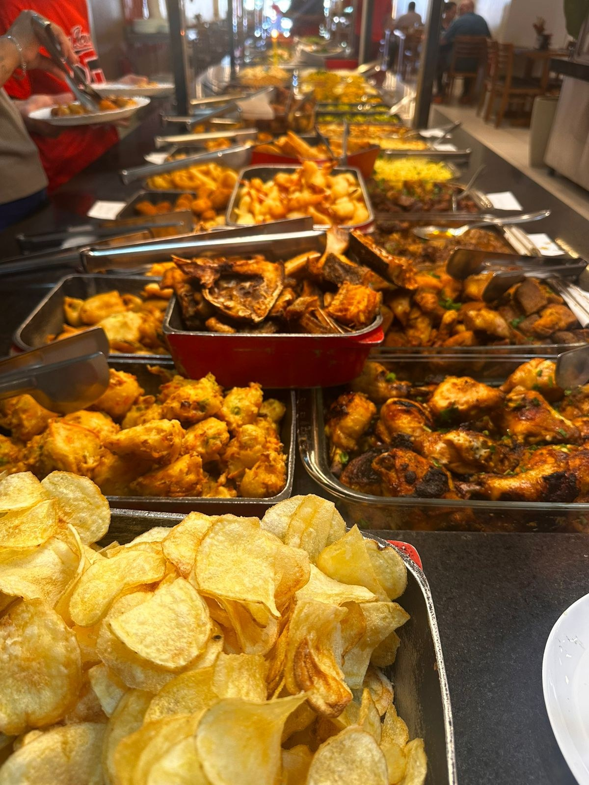
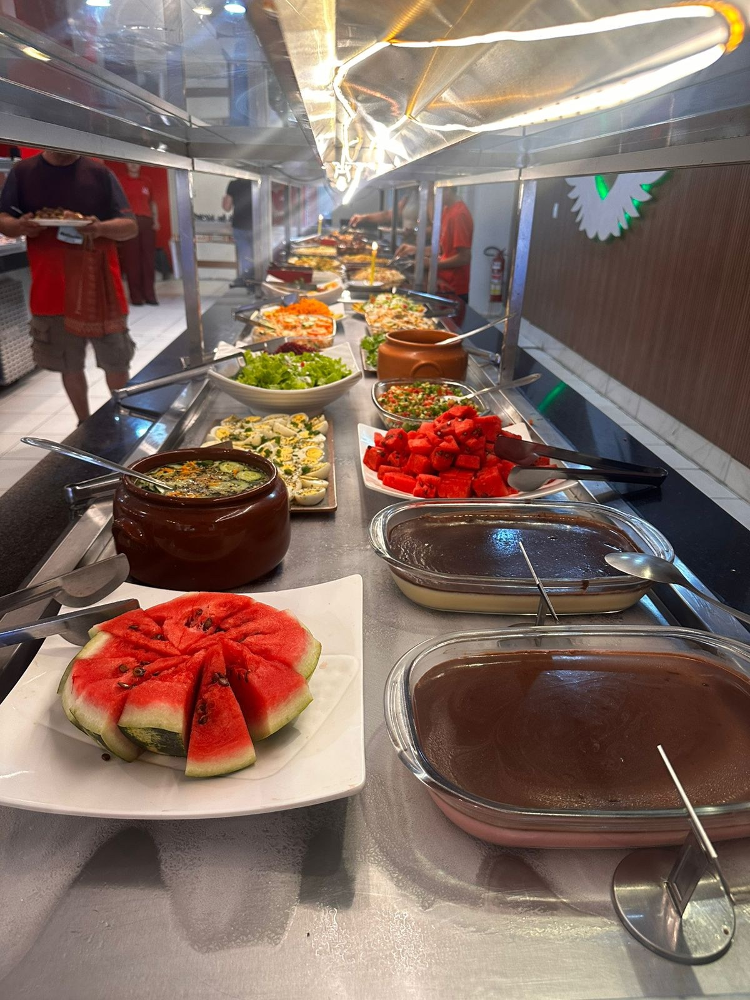
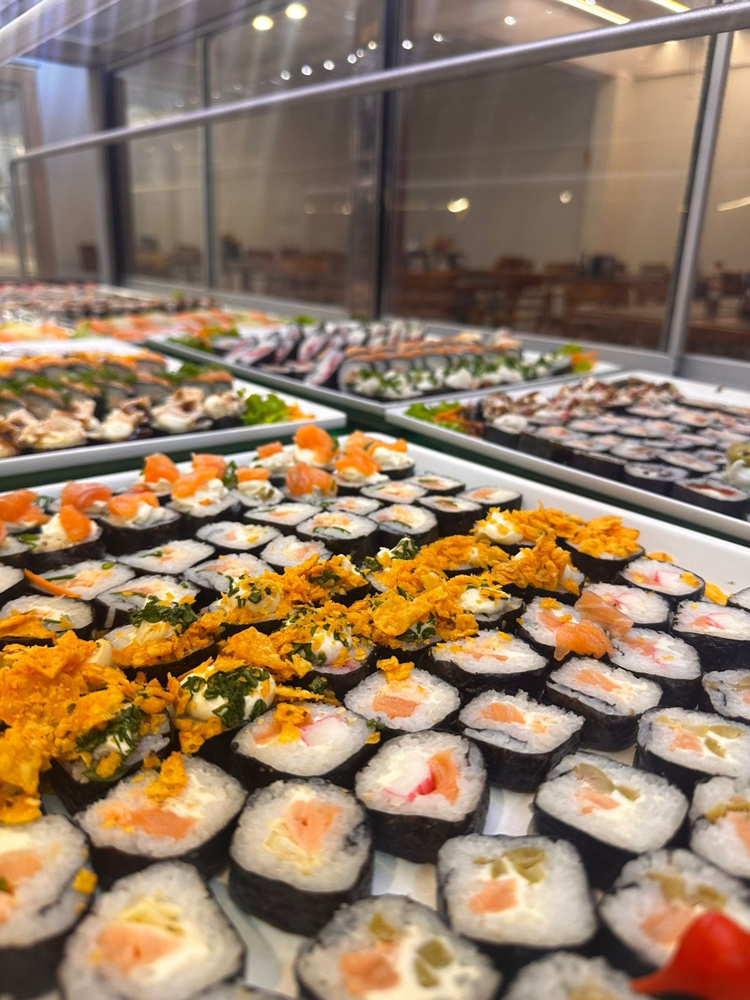
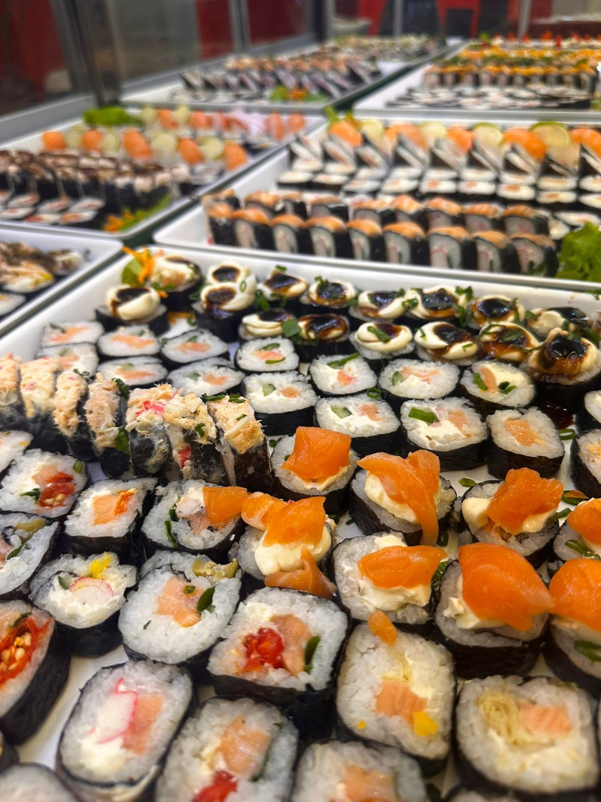
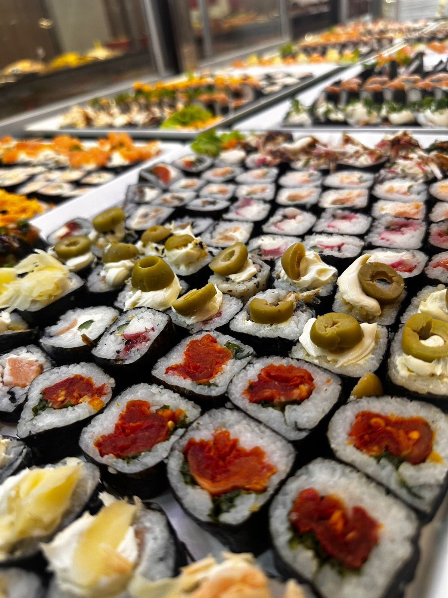

Venha conhecer o buffet do Xangai Restaurante e escolher seus sabores favoritos.
Telefone, horários de funcionamento e links de pedidos podem ser adicionados quando você enviar esses dados.